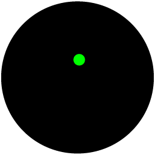

<div class="ui-g panel ">
    
      <!-- 
       -->
    
    
      <div class="ui-g-12 header_sq">
        <div class="ui-g-4 jugadosq">
          <!-- <div class="ui-g-12">
            
          </div> -->
            <div class="ui-g-3">
            
          </div>
          <div class="ui-g-9 nombre_sq" >{{jugadorA}} </div>
    
        </div>
        <div class="ui-g-4">
          <div class="ui-g-3 d_exclusion_sq" [ngStyle]="styleA">Exclusión</div>
          <div class="ui-g-3 d_puntaje_sq" [ngStyle]="styleA">{{contadorA}}</div>
      
          <div class="ui-g-3 ">
            <div class="set_sq">{{set}}</div>
            <!-- <div class="crono_sq">{{cronometro}}</div> -->
          </div>
          <div class="ui-g-3 i_puntaje_sq " [ngStyle]="styleB">{{contadorB}} </div>
          <div class="ui-g-3 i_exclusion_sq " [ngStyle]="styleB">Exclusión </div>
        </div>
        <div class="ui-g-4  jugadosq">
          <!-- <div class="ui-g-12">
            
          </div> -->
          <div class="ui-g-2"></div>
          <div class="ui-g-9 nombre_sq derecha" > {{jugadorB}}</div>
            <div class="ui-g-3">
            
          </div>
    
        </div>
    
      </div>

       <!-- <div class="mensaje_sq" *ngIf="cronometro_descuento!='00:00'">
        <div class="ui-g-4"></div>
        <div class="ui-g-4 fondo_mensaje_sq">
          <div class="title_m">Descanso</div>
          <div class="cronometro_m">{{cronometro_descuento}}</div>
        </div>
        <div class="ui-g-4"></div>
    
      </div>  -->
    
      <!-- <div class="mensaje_sq" *ngIf="visible" [@flyInOut]>
        <div class="ui-g-3"></div>
        <div class="ui-g-6 fondo_mensaje_sq">{{mensaje}}</div>
        <div class="ui-g-3"></div>
    
      </div> -->

      <div class="tabla_sq">
       <table class ="tabla_in" >
           <tr>
               <td>
                    <div class="ui-g-8 fondo_mensaje_sq" >
                            <table>
                              
                                   <tbody>
                                        <tr *ngFor="let periodo of periodosA let i = index"  >
                                   
                                                <td>
                                                      <!-- <div class="ui-g-8 " [ngStyle]="estilo" ><span>{{periodo.Nombre}}</span></div>   -->
                                                    <div  class="{{periodo.Estado === 1?'ui-g-8 fondo_mensaje_sq_v nombre_col_sq':'ui-g-8 fondo_mensaje_sq_r nombre_col_sq'}}" ><span>{{periodo.Nombre}}</span></div> 
                                                 
                                                </td>
                                           
                                                <td>
                                                     <!-- <div class="ui-g-8 " [ngStyle]="estilo"  >  -->
                                                     <div  class="{{periodo.Estado === 1?'ui-g-8 time fondo_mensaje_sq_v punto_col_sq tiempo crono_sq color':'ui-g-8 time fondo_mensaje_sq_r punto_col_sq tiempo crono_sq color'}}" >
                                                       <app-cronometro-balonmano [configuracion]="configuracion"  [capturar]="capturar" [reversa]="true" [iniciar]="true"  [tieneTope]="true" [accion]="accion"
                                                          [setTiempo]="setTiempo"  (HoraCapturada)="doCapturaA($event)" (ColorVerde)="doCapturarFinalA($event)"   [setDato] = "setDato"  (Posicion)="doCapturaPosicion($event)"
                                                          [time]="'tiempo'"     >  
                                                      </app-cronometro-balonmano> 
                                                 
                                                   </div> 

                                                </td>
                                              
                                              </tr>

                                   </tbody>
                            </table>
                    </div>
                    
                          
               </td>
               <td>
                  
                    <div class="ui-g-8 fondo_mensaje_sq">
                            <table>
                              
                                   <tbody>
                                        <tr *ngFor="let periodo of periodosB let i = index" >
                                            <td>
                                                <!-- <div class="ui-g-8 " [ngStyle]="estilo" ><span>{{periodo.Nombre}}</span></div>   -->
                                              <div  class="{{periodo.Estado === 1?'ui-g-8 fondo_mensaje_sq_v nombre_col_sq':'ui-g-8 fondo_mensaje_sq_r nombre_col_sq'}}" ><span>{{periodo.Nombre}}</span></div> 
                                           
                                          </td>
                                     
                                          <td>
                                               <!-- <div class="ui-g-8 " [ngStyle]="estilo"  >  -->
                                               <div  class="{{periodo.Estado === 1?'ui-g-8 time fondo_mensaje_sq_v punto_col_sq tiempo crono_sq color':'ui-g-8 time fondo_mensaje_sq_r punto_col_sq tiempo crono_sq color'}}" >
                                                 <app-cronometro-balonmano-d [configuracionB]="configuracion"  [capturarB]="false" [reversaB]="true" [iniciarB]="true"  [tieneTopeB]="true" [accionB]="accionB"
                                                 [setTiempoB]="setTiempo"  (HoraCapturadaB)="doCapturaB($event)" (ColorVerdeB)="doCapturarFinalB($event)"   [setDatoB] = "setDatoB"  (PosicionB)="doCapturaPosicion($event)"
                                                 [timeB]="'tiempo'"     >  
                                                </app-cronometro-balonmano-d> 
                                           
                                             </div> 

                                          </td>
                                              
                                              </tr>

                                   </tbody>
                            </table>
                    </div>

                    
               </td>
           </tr>
       </table>
     
       


      </div>
    </div>